Capítulo 14 Gráficos com o R base
Começa aqui a segunda parte do livro, dedicada à visualização. Um gráfico bem feito faz num instante o que uma tabela de números raramente consegue: revela um padrão, uma tendência, uma assimetria, um valor atípico. A visualização não é um enfeite que se acrescenta no fim de uma análise — é uma ferramenta de raciocínio, e muitas vezes o primeiro passo para compreender os dados.
O R inclui, de origem, um sistema de gráficos poderoso e flexível, a que se costuma
chamar R base. Neste capítulo percorremos os tipos de gráfico mais comuns —
barras, circular, histograma, caixa de bigodes, dispersão e linhas — associando cada
um ao tipo de variável e à pergunta que responde. Mais adiante (Capítulo 16) conheceremos o ggplot2, uma alternativa moderna; mas dominar o R
base é indispensável, pela sua ubiquidade e pela rapidez com que produz um gráfico
exploratório.
Neste capítulo aprendemos a construir e personalizar os gráficos essenciais do R base e, sobretudo, a escolher o gráfico certo para cada tipo de dados: barras e gráficos circulares para variáveis categóricas; histogramas e caixas de bigodes para variáveis quantitativas; dispersão e linhas para relações entre variáveis.
14.1 Gráfico de barras
Um gráfico de barras representa uma variável categórica: cada barra corresponde a uma categoria e a sua altura indica a frequência (absoluta ou relativa) dessa categoria. A largura das barras é constante e não tem significado estatístico.
barplot(altura,
names.arg = NULL, # rótulos do eixo x
main = NULL, # título
xlab = NULL, ylab = NULL,
col = NULL, # cor(es) das barras
beside = FALSE) # barras lado a lado (TRUE) ou empilhadas (FALSE)O argumento altura pode ser um vetor de frequências (gráfico simples) ou uma matriz
(barras agrupadas ou empilhadas). O caminho habitual é obter as frequências com
table() e passá-las a barplot():
# Cores preferidas de nove pessoas
cores <- c("Azul", "Vermelho", "Verde", "Azul", "Verde",
"Vermelho", "Azul", "Verde", "Azul")
frequencia_absoluta <- table(cores)
barplot(frequencia_absoluta,
main = "Cores preferidas",
xlab = "Cor",
ylab = "Frequência absoluta",
col = c("steelblue", "seagreen", "firebrick"),
border = "black")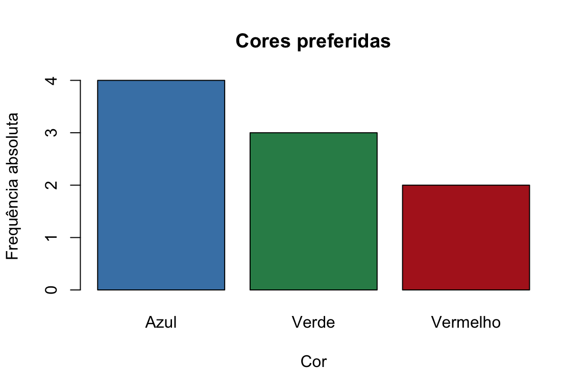
Figura 14.1: Gráfico de barras com frequências absolutas.
Para representar as frequências relativas, basta dividir pela dimensão da amostra:
frequencia_relativa <- frequencia_absoluta / length(cores)
barplot(frequencia_relativa,
main = "Cores preferidas",
xlab = "Cor",
ylab = "Frequência relativa",
col = c("steelblue", "seagreen", "firebrick"),
border = "black")Figura 14.2: O mesmo gráfico com frequências relativas.
Repare que os dois gráficos têm exatamente a mesma forma — muda apenas a escala do eixo vertical. As frequências relativas são úteis quando se querem comparar amostras de dimensões diferentes, para as quais as frequências absolutas seriam enganadoras.
O argumento horiz = TRUE desenha as barras na horizontal, o que ajuda quando os
rótulos das categorias são longos:
barplot(frequencia_absoluta,
main = "Cores preferidas",
xlab = "Frequência absoluta",
col = c("steelblue", "seagreen", "firebrick"),
horiz = TRUE)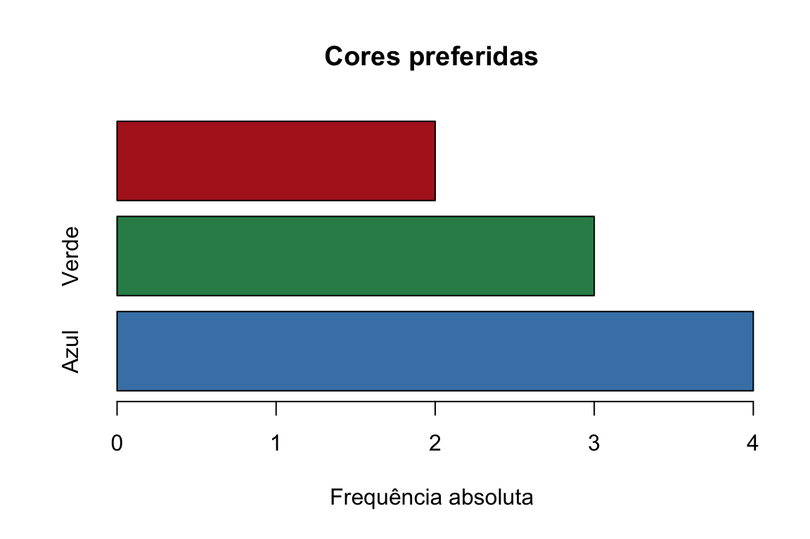
Figura 14.3: Gráfico de barras horizontal.
14.1.1 Barras agrupadas e empilhadas
Quando queremos comparar duas variáveis ao mesmo tempo, organizamos os dados numa matriz. Comparemos, por exemplo, a quantidade de amostras de dois tipos de rocha em três regiões:
regioes <- c("Região 1", "Região 2", "Região 3")
granito <- c(15, 10, 25)
basalto <- c(20, 15, 10)
dados_rochas <- rbind(granito, basalto)
barplot(dados_rochas,
beside = TRUE,
names.arg = regioes,
col = c("lightblue", "lightcoral"),
legend.text = c("Granito", "Basalto"),
main = "Amostras de rocha por região",
xlab = "Região",
ylab = "Número de amostras")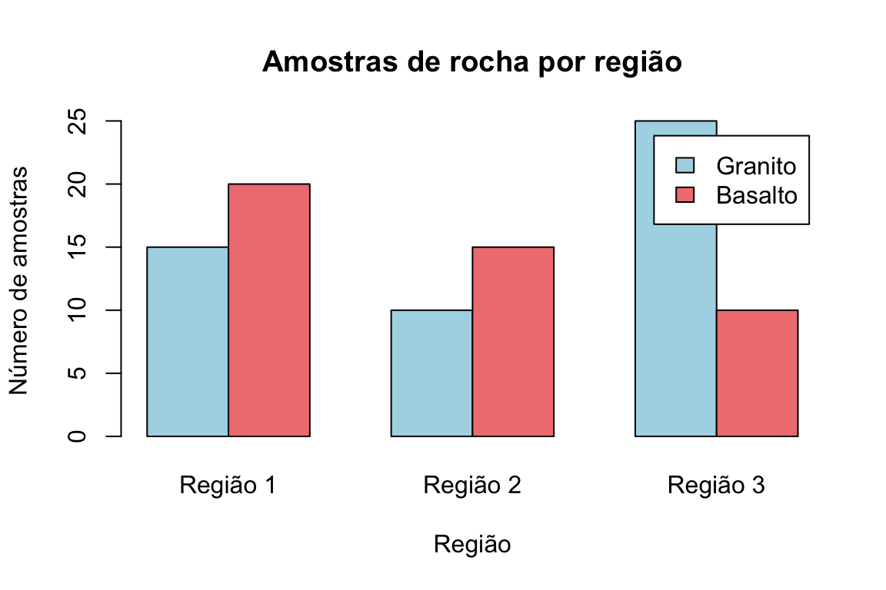
Figura 14.4: Barras agrupadas: cada região mostra os dois tipos de rocha lado a lado.
Usámos rbind() para juntar os dois vetores numa matriz e beside = TRUE para pôr as
barras lado a lado; legend.text gera a legenda. Removendo beside = TRUE, as barras
passam a estar empilhadas — cada barra mostra o total da região, repartido pelos
dois tipos de rocha:
barplot(dados_rochas,
names.arg = regioes,
col = c("lightblue", "lightcoral"),
legend.text = c("Granito", "Basalto"),
main = "Amostras de rocha por região",
xlab = "Região",
ylab = "Número de amostras")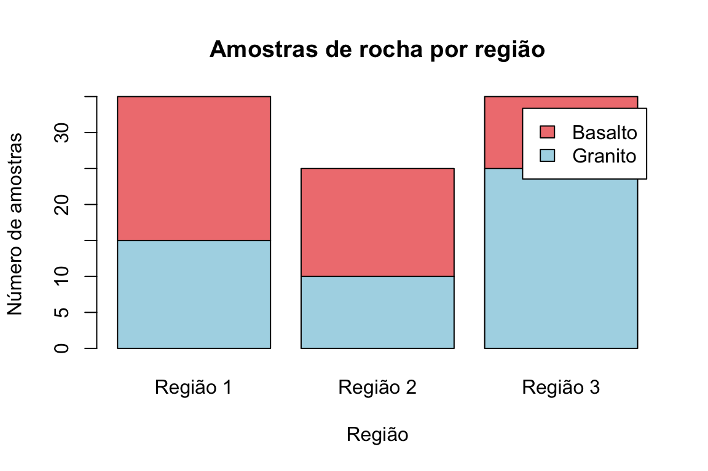
Figura 14.5: As mesmas barras, agora empilhadas.
14.2 Gráfico circular
O gráfico circular (ou de setores) mostra a proporção de cada categoria face ao total: cada fatia é proporcional à percentagem que representa.
pie(x, labels = NULL, main = NULL, col = NULL, radius = 1)
pie(frequencia_relativa,
main = "Cores preferidas",
col = c("steelblue", "seagreen", "firebrick"),
labels = paste(names(frequencia_relativa),
round(frequencia_relativa * 100, 1), "%"))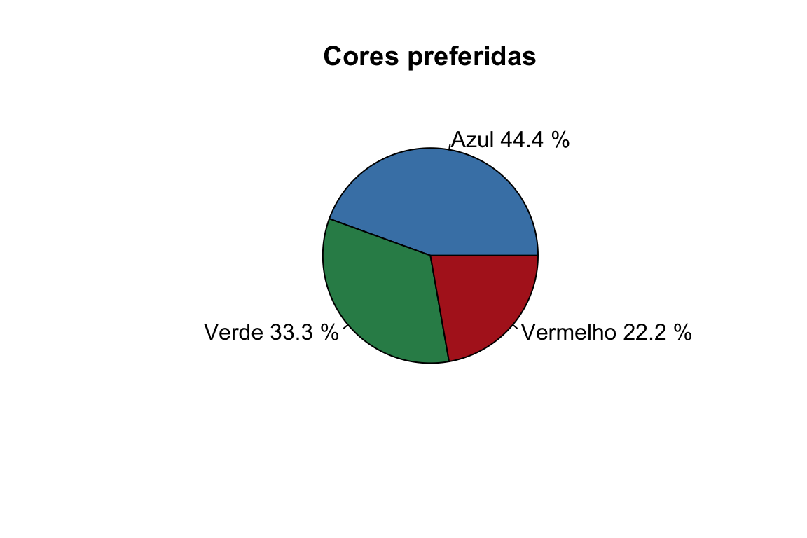
Figura 14.6: Gráfico circular das cores preferidas, com percentagens.
O gráfico circular é popular, mas deve usar-se com moderação. O olho humano compara comprimentos (barras) com muito mais precisão do que ângulos ou áreas (fatias), pelo que diferenças pequenas entre categorias são difíceis de ler num gráfico circular, e tornam-se ilegíveis quando há muitas fatias. Como regra prática: para comparar frequências, um gráfico de barras é quase sempre a escolha mais clara.
14.3 Histograma
O histograma é o gráfico por excelência para uma variável quantitativa contínua. Divide-se o eixo horizontal em classes (intervalos) e desenha-se, sobre cada classe, um retângulo cuja altura traduz a frequência das observações nela contidas. É a forma mais direta de ver a distribuição dos dados: onde se concentram, se são simétricos, se têm valores atípicos.
hist(x, breaks = "Sturges",
main = NULL, xlab = NULL, ylab = NULL,
col = NULL, border = NULL)O argumento breaks controla as classes: pode ser um número, ou um método automático
("Sturges", "Scott", "FD"). Por omissão, o R usa a regra de Sturges e classes do
tipo \((a, b]\) (abertas à esquerda, fechadas à direita).
# Massa (kg) de 40 bicicletas
bicicletas <- c(4.3, 6.8, 9.2, 7.2, 8.7, 8.6, 6.6, 5.2, 8.1, 10.9,
7.4, 4.5, 3.8, 7.6, 6.8, 7.8, 8.4, 7.5, 10.5, 6.0,
7.7, 8.1, 7.0, 8.2, 8.4, 8.8, 6.7, 8.2, 9.4, 7.7,
6.3, 7.7, 9.1, 7.9, 7.9, 9.4, 8.2, 6.7, 8.2, 6.5)
h <- hist(bicicletas,
breaks = "Sturges",
main = "Massa das bicicletas",
xlab = "Massa (kg)",
ylab = "Frequência absoluta",
col = "lightblue",
border = "black",
ylim = c(0, 12),
labels = TRUE)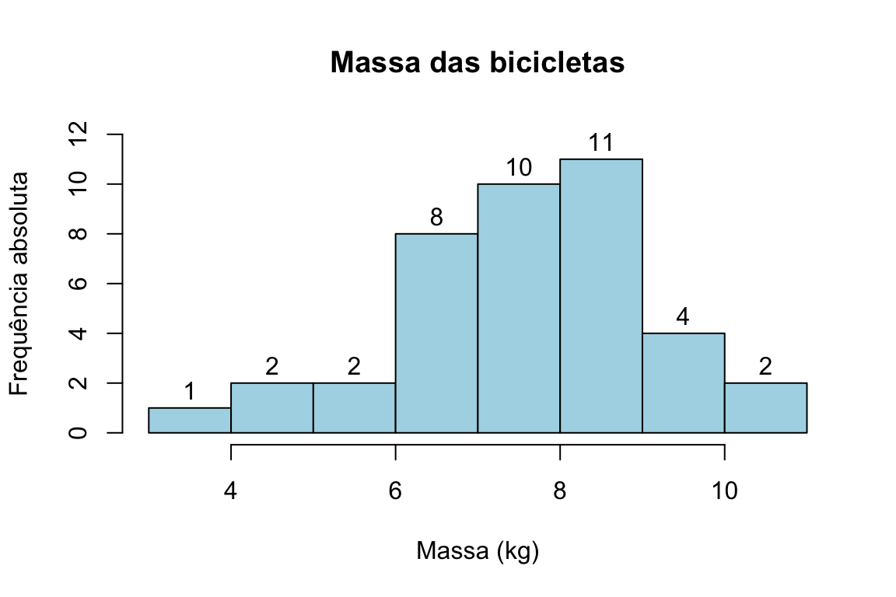
Figura 14.7: Histograma da massa de 40 bicicletas (frequências absolutas).
Guardar o resultado de hist() num objeto (aqui, h) dá acesso aos valores usados na
sua construção — os limites das classes e as contagens:
h$breaks # limites das classes
## [1] 3 4 5 6 7 8 9 10 11
h$counts # frequência absoluta em cada classe
## [1] 1 2 2 8 10 11 4 214.3.1 Densidade e curvas suaves
Com o argumento freq = FALSE, o histograma passa a representar a densidade em
vez das contagens:
hist(bicicletas,
main = "Massa das bicicletas",
xlab = "Massa (kg)",
ylab = "Densidade",
freq = FALSE,
col = "lightblue",
border = "black")
# Sobrepor uma estimativa suave da densidade
lines(density(bicicletas), col = "red", lwd = 2)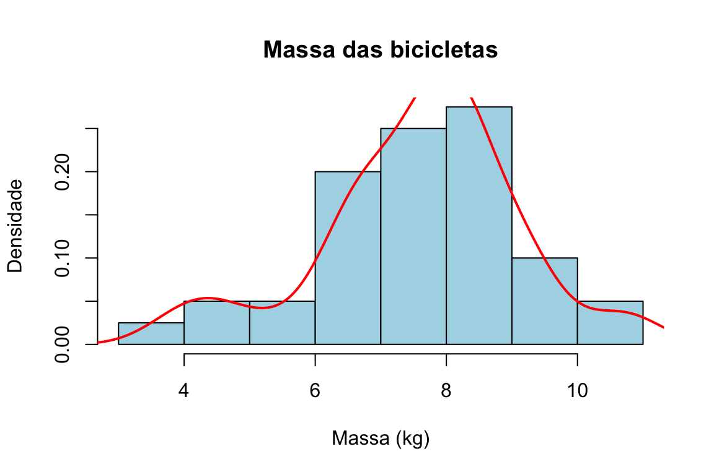
Figura 14.8: Histograma em escala de densidade, com a curva de densidade estimada.
É comum ler-se que freq = FALSE produz “frequências relativas”, mas isso não é
rigorosamente exato. O que a opção desenha é a densidade: as alturas são escaladas
de modo a que a área total do histograma seja igual a 1. Só quando todas as classes
têm a mesma amplitude é que a altura fica proporcional à frequência relativa. A
distinção importa porque é a escala de densidade — e não a de frequências — que
permite sobrepor ao histograma uma curva de densidade, como fizemos com
density(), ou a curva de um modelo teórico.
14.4 Caixa de bigodes (boxplot)
A caixa de bigodes resume a distribuição de uma variável a partir dos seus quartis. A caixa vai do primeiro quartil (\(Q_1\)) ao terceiro (\(Q_3\)), com um traço na mediana (\(Q_2\)); os “bigodes” estendem-se a partir da caixa e os pontos para lá deles assinalam possíveis valores atípicos.
boxplot(x,
main = NULL, xlab = NULL, ylab = NULL,
col = NULL, border = NULL,
horizontal = FALSE)Ao contrário do que por vezes se diz, os bigodes não marcam necessariamente o mínimo e o máximo. Por convenção, cada bigode estende-se até à observação mais extrema que ainda esteja dentro de \(1.5 \times \text{AIQ}\) da caixa, onde \(\text{AIQ} = Q_3 - Q_1\) é a amplitude interquartil. As observações que caem para além dos bigodes são desenhadas individualmente e interpretadas como candidatas a valores atípicos. É esta regra que torna a caixa de bigodes tão útil para detetar outliers.
boxplot(bicicletas,
main = "Massa das bicicletas",
ylab = "Massa (kg)",
col = "lightblue",
border = "darkblue")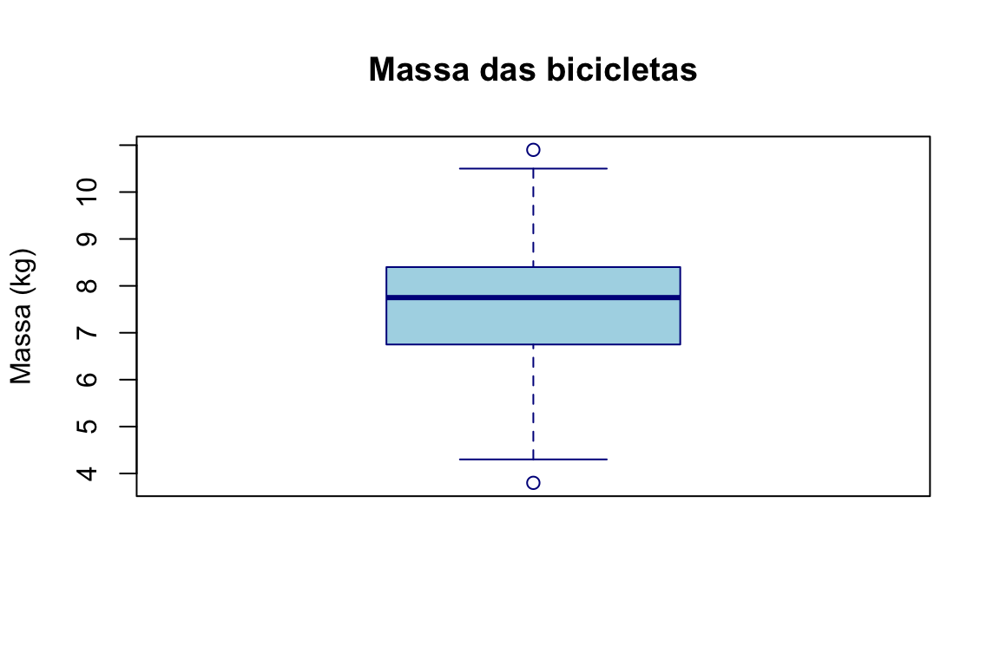
Figura 14.9: Caixa de bigodes da massa das bicicletas.
O argumento horizontal = TRUE roda o gráfico, e a função par(mfrow = ...) permite
dispor vários gráficos no mesmo painel:
par(mfrow = c(1, 2)) # painel de 1 linha, 2 colunas
boxplot(bicicletas, main = "Vertical", col = "lightblue")
boxplot(bicicletas, main = "Horizontal", col = "lightgreen", horizontal = TRUE)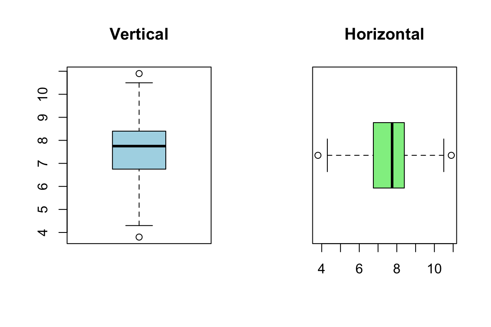
Figura 14.10: Dois gráficos no mesmo painel, com par(mfrow).
O verdadeiro valor da caixa de bigodes revela-se ao comparar grupos. Usando a
notação de fórmula variável ~ grupo, comparamos o comprimento da sépala entre as
três espécies de íris:
boxplot(Sepal.Length ~ Species,
data = iris,
main = "Comprimento da sépala por espécie",
xlab = "Espécie",
ylab = "Comprimento da sépala (cm)",
col = c("lightblue", "lightgreen", "lightpink"))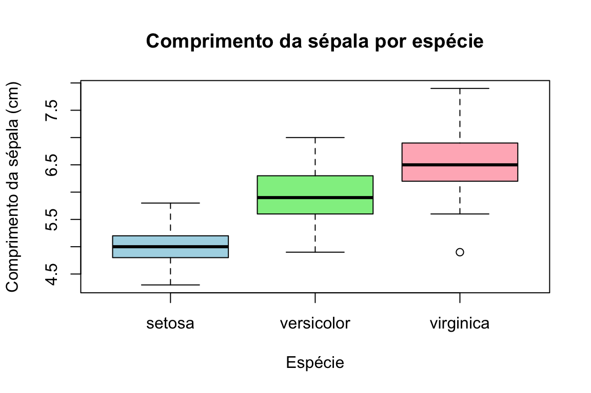
Figura 14.11: Comprimento da sépala por espécie no conjunto iris.
A leitura é imediata: a virginica tem sépalas tipicamente mais compridas, a setosa as mais curtas, e a dispersão dentro de cada espécie é relativamente semelhante.
14.5 Gráfico de dispersão
O gráfico de dispersão representa duas variáveis quantitativas, uma em cada eixo, e é a ferramenta natural para investigar a relação entre elas: se crescem juntas, se uma decresce quando a outra cresce, se há agrupamentos ou pontos afastados.
plot(x, y,
main = NULL, xlab = NULL, ylab = NULL,
col = NULL, # cor dos pontos
pch = NULL, # símbolo (ex.: 19 = ponto cheio)
cex = 1) # tamanho dos pontos
set.seed(1)
x <- rnorm(100)
y <- x + rnorm(100, sd = 0.5)
plot(x, y,
main = "Dispersão de X e Y",
xlab = "Variável X",
ylab = "Variável Y",
col = "steelblue",
pch = 19)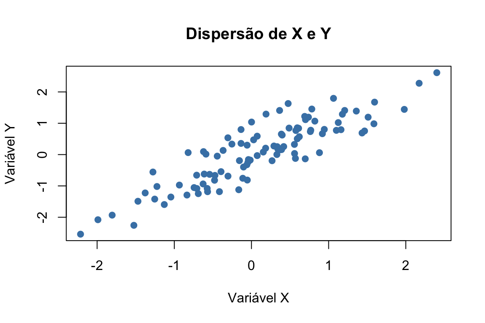
Figura 14.12: Gráfico de dispersão de duas variáveis relacionadas.
Podemos acrescentar a reta de regressão dos mínimos quadrados com abline()
aplicada a um modelo linear lm(), o que ajuda a ver a tendência global:
plot(x, y,
main = "Dispersão com reta de regressão",
xlab = "Variável X",
ylab = "Variável Y",
col = "steelblue",
pch = 19)
abline(lm(y ~ x), col = "seagreen", lwd = 2)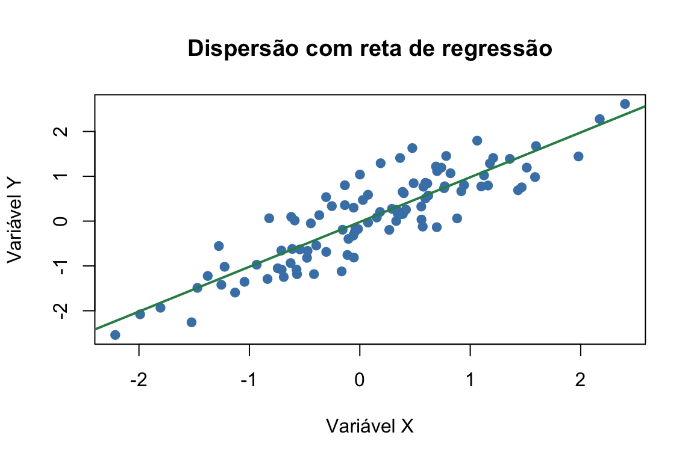
Figura 14.13: O mesmo gráfico com a reta de regressão dos mínimos quadrados.
Quando há grupos nos dados, podemos distingui-los por cor, acrescentando pontos com
points() e identificando-os com uma legenda:
set.seed(123)
x1 <- rnorm(50, mean = 5); y1 <- 3 * x1 + rnorm(50)
x2 <- rnorm(50, mean = 7); y2 <- 3 * x2 + rnorm(50)
plot(x1, y1,
main = "Dispersão com dois grupos",
xlab = "Eixo X", ylab = "Eixo Y",
col = "firebrick", pch = 16,
xlim = range(c(x1, x2)), ylim = range(c(y1, y2)))
points(x2, y2, col = "steelblue", pch = 16)
legend("topleft",
legend = c("Grupo 1", "Grupo 2"),
col = c("firebrick", "steelblue"), pch = 16)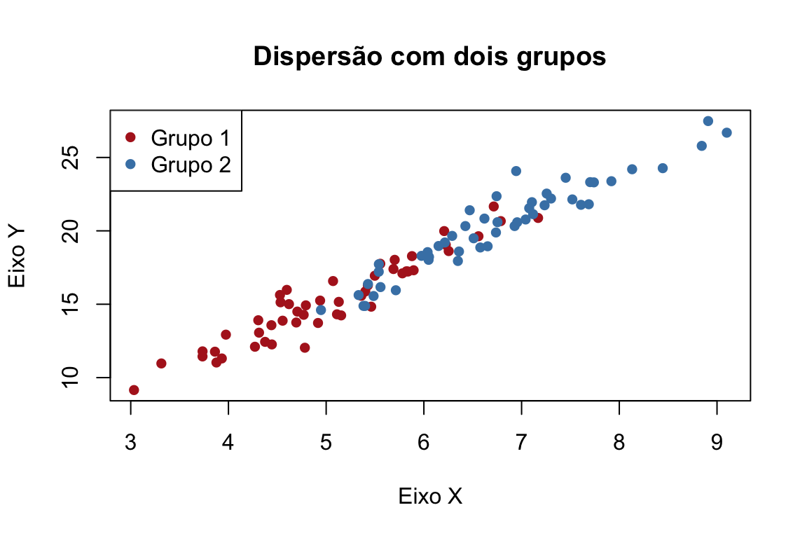
Figura 14.14: Dois grupos distinguidos por cor.
14.6 Gráfico de linhas
O gráfico de linhas liga os pontos por segmentos e é indicado para mostrar a
evolução de uma variável ao longo de uma sequência ordenada — em especial o tempo
(séries temporais). Obtém-se com plot() e o argumento type:
plot(x, y,
type = "l", # "l" = linha, "p" = pontos, "b"/"o" = ambos
lty = 1, # tipo de traço (1 = contínuo, 2 = tracejado)
lwd = 1) # espessura da linha
tempo <- 1:10
valores <- c(3, 5, 7, 9, 11, 10, 8, 6, 4, 2)
plot(tempo, valores,
type = "o",
main = "Evolução ao longo do tempo",
xlab = "Tempo",
ylab = "Valor",
col = "steelblue",
lwd = 2,
pch = 19)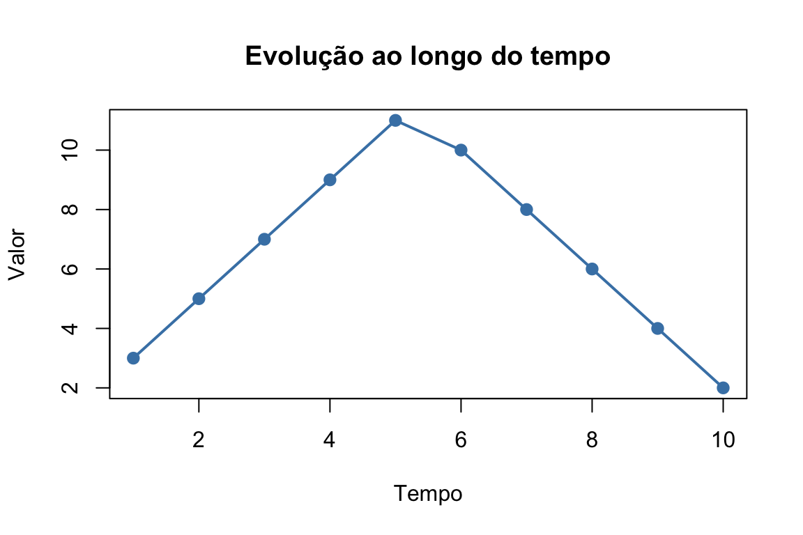
Figura 14.15: Gráfico de linhas com pontos e linha.
14.7 Exercícios
1. No conjunto iris, crie um gráfico de barras com a contagem de cada espécie
(título “Contagem de espécies”, eixo x “Espécie”, eixo y “Frequência absoluta”, cores
azul, verde e amarelo). Depois, refaça-o com frequências relativas.
2. No conjunto airquality, crie um gráfico de barras com a temperatura média
(Temp) por mês.
Sugestão: Use a função tapply() para obter a média mensal. (Título “Média
de temperatura por mês”, eixo x “Mês”, eixo y “Temperatura média (°F)”, cor azul.)
3. Crie um gráfico circular das espécies de flores do conjunto iris,
identificando cada fatia com o nome da espécie e a respetiva percentagem.
4. No conjunto Titanic, crie um gráfico circular com a proporção de sobreviventes
e não sobreviventes.
Sugestão: transforme Titanic numa data frame com as.data.frame().
5. Crie um histograma da variável Sepal.Length (conjunto iris). Personalize-o
com cor, ajuste o número de classes (breaks) e acrescente título e rótulos aos eixos.
6. Um investigador estuda a distribuição de alturas de plantas de duas espécies (A
e B), com 100 amostras de cada. Gere os dados com rnorm() (médias e desvios padrão
diferentes), desenhe um histograma sobreposto das duas distribuições (com
add = TRUE) e acrescente uma legenda. Use cores translúcidas para distinguir as
espécies:
altura_A <- rnorm(100, mean = 150, sd = 10)
altura_B <- rnorm(100, mean = 160, sd = 15)
# Cores translúcidas: rgb(vermelho, verde, azul, transparência)
# col = rgb(1, 0, 0, 0.5) e col = rgb(0, 0, 1, 0.5)
legend("topright",
legend = c("Espécie A", "Espécie B"),
fill = c(rgb(1, 0, 0, 0.5), rgb(0, 0, 1, 0.5)))7. Um professor aplicou um exame a 200 alunos (notas de 0 a 20) e quer analisar a
distribuição das notas. Gere as notas com rnorm(200, mean = 14, sd = 4) (use
set.seed(1234)), desenhe o histograma, calcule a média, a mediana e o desvio padrão,
e marque a média e a mediana no gráfico com abline(). Junte uma legenda:
legend("topright",
legend = c(paste("Média:", round(media_nota, 2)),
paste("Mediana:", round(mediana_nota, 2)),
paste("Desvio padrão:", round(desvio_nota, 2))),
bty = "n")8. No conjunto airquality, crie histogramas da variável Ozono (Ozone)
separadamente para cada mês (de maio a setembro). Use par(mfrow = c(3, 2)) para os
dispor no mesmo painel e compare a distribuição dos níveis de ozono ao longo dos meses.
9. No conjunto iris, crie uma caixa de bigodes que compare o comprimento da
pétala (Petal.Length) entre as três espécies. Personalize com cores diferentes por
grupo e acrescente título e rótulos.
10. No conjunto airquality, crie uma caixa de bigodes dos níveis de ozono
(Ozone) por mês (Month) e acrescente uma linha horizontal na mediana global com
abline(). Comente como o ozono varia ao longo do tempo.
11. Estude a relação entre a altura e o peso de um grupo de pessoas.
- Crie um vetor
alturacom 30 valores aleatórios entre 150 e 200 cm (userunif()). - Crie um vetor
pesoaproximadamente proporcional à altura:peso <- altura * 0.4 + runif(30, -5, 5). - Desenhe um gráfico de dispersão (altura no eixo x, peso no eixo y), com título e rótulos.
- Que tendência observa? Comente a correlação entre as duas variáveis.
12. Analise o crescimento de uma população ao longo de 20 anos.
- Crie um vetor
anosde 2000 a 2019. - Crie um vetor
populacaoa partir de 100 000 pessoas em 2000, com crescimento de 2% ao ano e uma pequena flutuação aleatória:populacao <- 100000 * cumprod(1.02 + runif(20, -0.01, 0.01)). - Desenhe um gráfico de linhas com a evolução da população ao longo dos anos.
Os gráficos do R base são rápidos e diretos, ideais para a exploração. No próximo
capítulo aprofundamos a manipulação de dados — o passo que quase sempre precede um
bom gráfico — e, mais adiante, conheceremos o ggplot2, que leva a visualização a
outro nível de expressividade.